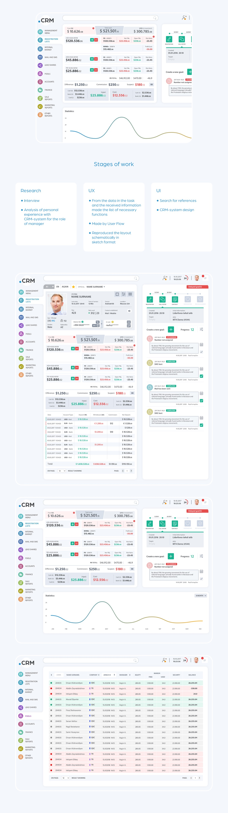

Rol əsaslı baxış
Məlumat menecerin gündəlik qərarları və nəzarət ehtiyaclarına görə sıralanır.
UX/UI Design
Müştəri qeydiyyatı, hesablar, satış nəticələri, tapşırıqlar və hədəfləri rol əsaslı, məlumat yönümlü idarəetmə panelində birləşdirən CRM təcrübəsi.

01 / Ümumi baxış
Əsas göstəricilər, müştəri profili, satış dinamikası və gecikən hədəflər menecerin qərar axınına uyğun bir ekranda prioritetləşdirilir.
İnterfeys satış komandalarının gündəlik nəzarət ehtiyacını modul məlumat kartları və aydın status kodları ilə qarşılayır.
Sol naviqasiya funksional bölmələri sabit saxlayır, sağ fəaliyyət paneli isə tapşırıq və hədəfləri əsas məlumatdan ayırmadan göstərir.
02 / Yanaşma
Məlumat menecerin gündəlik qərarları və nəzarət ehtiyaclarına görə sıralanır.
Məbləğ, status və fərqlər satış prosesinin vəziyyətini sürətlə göstərir.
Tapşırıq və hədəflər aid olduğu müştəri və göstəricilərin yanında görünür.
03 / Vizual istiqamət
04 / Dizayn sistemi
Məbləğ, status və fəaliyyətlər ölçü və rənglə aydın ayrılır.
Rəng işarələri prosesin vəziyyətini cədvəldə dərhal göstərir.
Kartlar müxtəlif rol və məlumat ssenarilərinə uyğun genişlənir.
05 / Növbəti
Növbəti layihəNəqşicahan Qrup↗